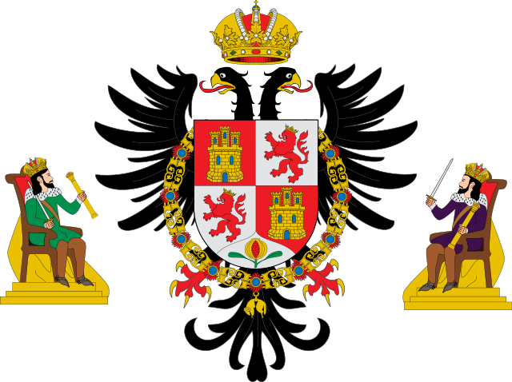

Toledo es un municipio y ciudad española, capital de la provincia homónima, en la comunidad autónoma de Castilla-La Mancha. Con una población de 85.811 habitantes (INE, 2020), se trata del tercer municipio más poblado de la región. El casco histórico está situado en la margen derecha del Tajo, en una colina rodeada por un pronunciado meandro. El término municipal incluye dos barrios muy separados del núcleo principal: el de Azucaica, en la orilla derecha del río, y el de Santa María de Benquerencia, situado prácticamente enfrente del anterior en la margen izquierda.
